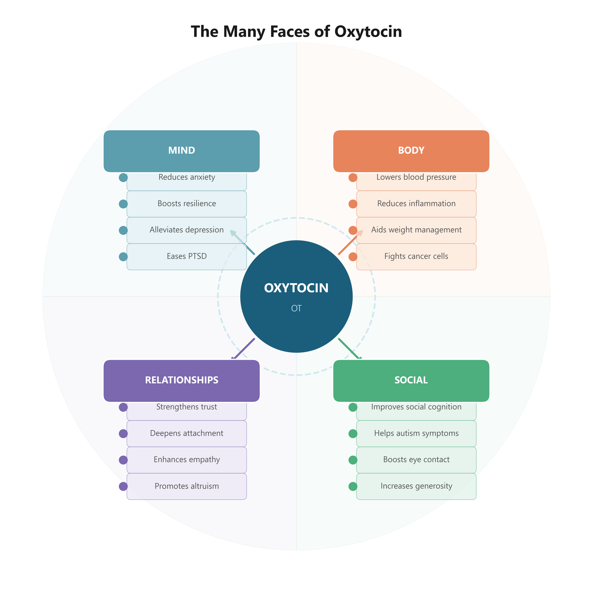

Turn on the news these days, and heartbreaking stories hit you one after another. A young man who, after years of failed job searches, locked himself in his room and eventually gave up on life. An elderly mother found dead in a tiny rented room months after she passed away alone, waiting for children who never came. A child who died of malnutrition after surviving on convenience-store rice balls. A middle-aged man who died alone, isolated like an outcast because he struggled with social skills. A sick mother who couldn't bring herself to follow her disabled daughter into death. Stories like these weigh heavily on all of us.
But the world isn't made up of only sad, heartbreaking tales. There's the daughter who took over her late mother's "thousand-won restaurant" — a place that had served meals for just one thousand won (less than a dollar) to those who couldn't afford to eat. After her mother passed away from cancer following five years of running the restaurant, this remarkable young woman now runs the restaurant in the morning and sells insurance in the afternoon. There's the Superman-like man who risked his own car and his life to rescue people drowning in floodwaters. The neighbor who left a basket of snacks by the front door for a taxi driver too busy to stop for water. The mothers who pray day and night for children who've moved away to the city. The devoted sons and daughters who sacrifice their own lives to care for parents with dementia. The countless couples who may never make headlines but quietly love and cherish each other. The lovers who cling to each other through poverty with a tenderness that aches. In this same world, stories of warmth are everywhere.
Oxytocin is the hormone that warms our hearts. It is the hormone that enables us to trust and love one another more deeply. Now, when I say it like that, you might think oxytocin sounds like some unscientific feel-good chemical. Far from it. Since the first oxytocin-related paper was published in 1929, a staggering 33,423 research papers on oxytocin had been published by December 2023. So — shall we take a closer look at what oxytocin is all about?
## Oxytocin: The Love Hormone
Have you ever heard the word oxytocin? Some of you might be nodding, while others may be shaking your heads. If you've ever had an induced labor, you've likely received an oxytocin injection. Oxytocin causes the uterus to contract, and a contracting uterus triggers the pituitary gland to release even more oxytocin. As oxytocin levels rise, the uterus contracts more forcefully. Through this self-reinforcing cycle, a mother's oxytocin levels during childbirth can surge to 20 to 30 times their normal level. Oxytocin creates an intense feeling of maternal love. It makes a mother want to hold her baby close and nurse. When the mother's breasts fill with milk and she instinctively brings her baby to her breast, that is the work of this remarkable hormone. In fact, oxytocin also plays a direct role in releasing milk from the breast. It drives a mother to care for her child with love. And this has been proven experimentally: researchers discovered that when oxytocin was removed from mother rats, they completely stopped caring for their pups. Conversely, when virgin rats — who had no offspring of their own — were given oxytocin, they began nurturing pups placed in front of them as if the babies were their own.
Oxytocin is also intimately connected to romance. Couples in new relationships have higher blood oxytocin levels compared to single individuals. Couples whose oxytocin levels rose sharply in the early stages of their relationship were far more likely to still be together six months later, while those whose levels remained low were much more likely to have broken up. In other words, early-relationship oxytocin levels are a powerful predictor of whether a couple will stay together. As we'll explore further, emotional connection and physical touch between partners raise oxytocin — so it's hardly surprising that couples with high early oxytocin levels tend to last. Oxytocin is also released during sexual intercourse, which explains the sudden spike in attachment partners feel after sharing an orgasm.
## It Raises Your Social Intelligence
Oxytocin doesn't stop at being a love hormone. Recent research has revealed effects that scientists never previously imagined. One of the most striking discoveries is that oxytocin profoundly influences the social development of children. In one groundbreaking experiment, children on the autism spectrum inhaled an oxytocin nasal spray and, unlike before, began reading emotions from other people's facial expressions — something close to a miracle. This study, which excited scientists around the world, was a double-blind trial: children with autism spectrum disorder who inhaled real oxytocin were significantly better at detecting others' eye movements and facial expressions compared to those who received a placebo. Follow-up experiments with neurotypical adolescents yielded similar results, and this finding is now widely accepted as established science. Put simply, oxytocin has been recognized as more than a love hormone — it is a relationship hormone, a social hormone.
So, are there people who are naturally low in oxytocin? Yes, there are. Oxytocin is closely linked to the gene "GTF2I," sometimes called the "sociability gene." People with a variation in the oxytocin receptor known as "rs53576" have been reported to show reduced empathy compared to the general population. Come to think of it, don't we all know someone like that? Picture the office dinner: the junior staff politely say, "Boss, stay a little longer!" — and the boss, completely oblivious, sits back down with a grin: "Oh, if you insist." Then he picks up his glass and launches into a classic "Back in my day..." speech. Totally clueless. Everyone at the table knows that what the employees actually want isn't their boss's company — they want the company credit card. The socially savvy move? Leave the card on the table and make yourself scarce. In reality, oxytocin is the social hormone that can turn someone's social radar up to maximum sensitivity.
Here's another fascinating experiment. Researchers had subjects inhale oxytocin and then play an investment game. The group that inhaled oxytocin trusted their investment partners significantly more and increased their investments by 27 percent. To make sure this wasn't simply a greater appetite for risk, the researchers ran additional experiments and found no difference in risk-taking behavior between the oxytocin and placebo groups. This captivating study was published in the prestigious journal Nature in 2005 and has since been cited more than 5,000 times.
There's another entertaining study along these lines. Researchers selected 49 couples who had been living together for at least a year and deliberately had them argue about topics that typically sparked conflict between them. (Yes, some experiments really are that creative.) The arguments were videotaped and analyzed. Both men and women in the oxytocin group argued in a significantly more constructive manner — more positive, more empathetic, more committed to nonviolent communication. The researchers had tried to start a fight, but the couples treated with oxytocin simply couldn't manage it.
## Is Oxytocin a Morality Hormone?
There's even research on infidelity. Prairie voles are monogamous — males and females devote themselves to a single partner. Montane voles, on the other hand, are promiscuous. Apparently, not all rodents are created equal. Male prairie voles groom their pups (licking and tidying their fur) and actively participate in child-rearing, while male montane voles ignore their offspring entirely. But when researchers genetically modified montane vole males so that their oxytocin receptors functioned normally, those formerly indifferent fathers suddenly began caring for their pups. This line of research is so important that we'll explore it in much greater detail later in the book.
The magic of oxytocin has been confirmed in human experiments as well. In one study, married men inhaled oxytocin and then an attractive young woman was sent to approach them flirtatiously. The men were asked how close the woman could get before they felt uncomfortable. The men who had inhaled oxytocin said they became uncomfortable when the woman was about 71 centimeters away. But those who had inhaled a placebo didn't feel uncomfortable until she was just 56 centimeters away — meaning the placebo group allowed the woman significantly deeper into their personal space. The truly interesting finding? This effect only appeared in married men. Unmarried men, whether they had inhaled oxytocin or not, were perfectly happy to have an attractive woman get close. Not exactly a surprise, is it?
## The Skin-to-Skin Hormone
And that's not all. Oxytocin also has profound physical health benefits. Recent research has found that oxytocin is linked to cancer, cardiovascular disease, obesity, diabetes, and even aging. Higher levels of oxytocin in the body are associated with a greater likelihood of preventing cancer, heart disease, obesity, and diabetes. Beyond alleviating chronic disease, it appears to slow the aging process, accelerate the generation of nerve cells, promote bone growth to prevent osteoporosis, and speed the healing of muscle damage and wounds. Some research even suggests that raising blood oxytocin levels can improve the symptoms of dementia. At this point, some of you might be impatiently asking, "Where can I buy oxytocin spray?"
You don't need to buy anything. There is a way to dramatically raise your oxytocin levels without spraying anything up your nose. Can you guess what it is?
Physical touch. When you were little and your stomach hurt, you ran straight to your mother. She would gently rub your belly, saying the Korean equivalent of "Mommy's hands are magic hands" — and somehow, miraculously, the pain went away. This kind of skin-to-skin contact stimulates the release of oxytocin in the body. When blood oxytocin levels rise, they raise our pain threshold. Our bodies are wonderfully sophisticated — they don't transmit every sensation to the brain. Below a certain level, stimuli and pain are simply filtered out at the peripheral nerve stage. Research has shown that the more physical contact parents have with newborns, the higher the oxytocin levels in the baby's brain, which plays a positive role in emotional well-being and brain development.
Korean mothers traditionally carried their babies close to their bodies. Even when going out to work, they strapped their babies to their backs using a podaegi — a traditional Korean baby carrier. In contrast, Western parenting culture has historically emphasized independence: giving babies their own room, teaching them to sleep alone from an early age. But recently, the Korean mother's approach to physical closeness has been attracting worldwide attention. The podaegi itself has become a global phenomenon. There are even podaegi rental shops in England — I looked it up, and renting one for a month costs about 10 British pounds. You can feel the effort Western mothers are making to increase skin-to-skin contact with their babies.
Another way to raise oxytocin is simply eating with other people. This was demonstrated in a chimpanzee study. When chimps only groomed each other, oxytocin levels didn't rise very much. But when they shared food together, large amounts of oxytocin were detected in their urine. So if you need to win over a business client or build a relationship with a key contact, maybe skip the long-winded presentations. Instead, share a meal. It may be the single best way to raise the oxytocin levels of the person sitting across from you. If that person is your spouse, hold each other close, enjoy some intimate physical affection, and share a delicious meal together. If it's a business or academic contact, shake hands with warmth and intention, dine somewhere memorable, and then get down to business. And the next time you say to a friend, "We should grab a meal sometime," don't just say it — make time, sit down together, talk and laugh over a real meal.
## The Gossip Hormone
Gossip is yet another way to raise oxytocin. Does oxytocin spike when you achieve something great in life? When you get into college, land a job, or make a fortune? No, it doesn't. Those moments raise serotonin and dopamine — but oxytocin stays flat. Surprisingly, oxytocin rises when people gather together and gossip. When coworkers huddle to vent about that insufferable manager, that obnoxious executive, or that impossible customer, oxytocin is dancing.
There's actual research to back this up. One group was asked to share emotionally empathetic stories with each other, while another group was encouraged to gossip. In the first group, cortisol decreased but oxytocin didn't change. In the gossip group, cortisol decreased and oxytocin went up.
## The Eye-Contact Hormone
Another simple way to raise oxytocin is owning a pet. When you stroke and cuddle a dog, oxytocin levels surge in both the owner and the dog. Pet your dog while making eye contact. Eye contact and emotional connection are among the most effective oxytocin boosters. Don't just take my word for it — this was published in Science in 2015. There have even been experiments where dogs were given oxytocin directly. Dogs with elevated oxytocin became more obedient, more sociable, and made more eye contact with their owners. And here's the fascinating part: when that happened, the owner's oxytocin rose too. Isn't that remarkable?
In recent years, as nuclear families, single-person households, and eating alone have become the norm, oxytocin levels across the population have been steadily declining. In Korea, a new word has even been coined — haek-gaein (literally, "nuclear individual") — to describe this extreme individualization. I believe this trend is deeply connected to the rise in school bullying, depression, suicide, mental illness, inflammatory bowel disease, and lifestyle-related diseases. Oxytocin is not just good for your body — it is a secret weapon for your entire life. What if, instead of eating alone, we shared more meals with the people we care about? What if we chatted and gossiped more, exercised together, played together, visited our parents more often? I want to share with you how oxytocin comforts our hearts, how it makes us better people, how it makes us more lovable, and how it transforms us into more responsible human beings. Will you hear me out? Meeting oxytocin changed my life. It solved many of my problems and made my life immeasurably richer. It is my heartfelt wish that through this book, your life too will become happier, richer, and more beautiful.
From my lab in Sinchon, The Author
Imagine a wonder drug. One pill, and you suddenly become kinder. You see the positive side of others rather than the negative. When someone makes a mistake, you understand their perspective, forgive them, and respond with generosity. Better yet, this drug prevents obesity, diabetes, cardiovascular disease, and even cancer. It treats chronic pain, sleep disorders, anxiety, depression, and inflammatory bowel disease. And if a teenager on the autism spectrum takes it, they begin reading facial expressions for the very first time. If such a miracle drug existed, would you want to know about it? This drug is real. It is oxytocin — secreted by the posterior pituitary gland of the hypothalamus. In Part 1, I'm going to tell you everything about this miraculous substance.